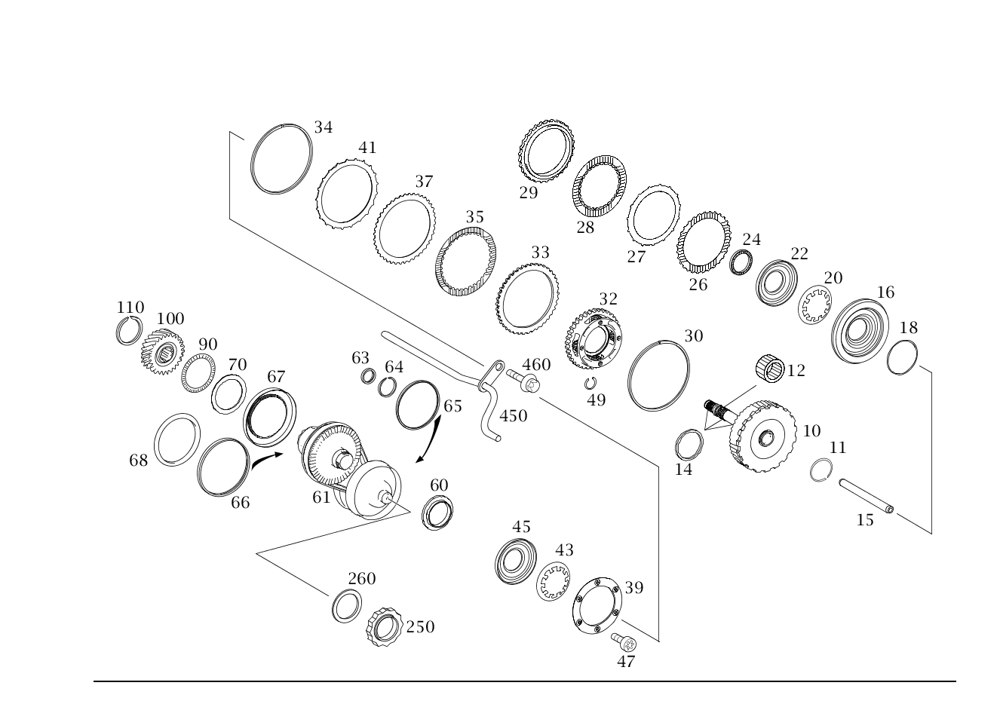

| № | Артикул | Название | Кол. | Примечание |
|---|---|---|---|---|
| 10 | A 169 370 10 26 | - Вал (SHAFT) | 1 | ВАЛ ОТБОРА МОЩНОСТИ |
| 11 | A 003 994 33 35 | - Зубчатая шайба (TOOTH LOCK WASHER) | 1 | ВАЛ ОТБОРА МОЩНОСТИ |
| 12 | A 022 981 06 10 | - Игольчатый подшипник (NEEDLE ROLLER BEARING) | 2 | |
| 14 | A 169 372 15 55 | - Уплотнительное кольцо (SEALING RING) | 3 | ВАЛ ОТБОРА МОЩНОСТИ |
| 14 | A 169 372 15 55 | - Уплотнительное кольцо (SEALING RING) | 2 | ВАЛ ОТБОРА МОЩНОСТИ |
| 15 | A 169 371 06 96 | - Маслопровод (OIL PIPE) | 1 | ВАЛ ОТБОРА МОЩНОСТИ |
| 16 | A 169 372 17 31 | - Поршень многодиск. муфты | 1 | ВАЛ ОТБОРА МОЩНОСТИ |
| 16 | A 169 372 21 31 | - Поршень многодиск. муфты (PISTON, MULTI DISK CLUTCH) | 1 | ВАЛ ОТБОРА МОЩНОСТИ |
| 18 | A 169 372 02 55 | - Уплотнительное кольцо (SEALING RING) | 1 | ВАЛ ОТБОРА МОЩНОСТИ |
| 20 | A 001 993 36 26 | - Тарельчатая пружина (DISK SPRING) | 1 | ВАЛ ОТБОРА МОЩНОСТИ |
| 22 | A 169 372 02 64 | - Тарелка пружины (SPRING RETAINER) | 1 | ВАЛ ОТБОРА МОЩНОСТИ |
| 24 | A 022 981 08 10 | - Упорный иг. подшипник (AXIAL NEEDLE RLR. BEARING) | 1 | ВАЛ ОТБОРА МОЩНОСТИ |
| 26 | A 169 372 00 26 | - Наружный диск (OUTER PLATE) | 3 | ВАЛ ОТБОРА МОЩНОСТИ |
| 27 | A 169 993 07 26 | - Тарельчатая пружина (DISK SPRING) | 1 | ВАЛ ОТБОРА МОЩНОСТИ |
| 28 | A 169 372 00 25 | - Внутренняя пластина (INNER PLATE) | 3 | ВАЛ ОТБОРА МОЩНОСТИ |
| 29 | A 169 372 04 26 | - Наружный диск (OUTER PLATE) | 1 | ВАЛ ОТБОРА МОЩНОСТИ |
| 30 | A 003 994 38 35 | - Пруж. стопорное кольцо (SNAP RING) | 1 | ВАЛ ОТБОРА МОЩНОСТИ 2.3 MM |
| 30 | A 003 994 43 35 | - Пруж. стопорное кольцо (SNAP RING) | 2 | ВАЛ ОТБОРА МОЩНОСТИ |
| 32 | A 169 370 01 43 | - Водило планет. передачи | 1 | |
| 32 | A 169 370 03 43 | - Водило планет. передачи (PLANET CARRIER) | 1 | |
| 33 | A 169 372 05 26 | - Наружный диск (OUTER PLATE) | 1 | ВОДИЛО ПЛАНЕТ. ПЕРЕДАЧИ |
| 34 | A 003 994 30 35 | - Пруж. стопорное кольцо (SNAP RING) | 1 | 2,40 MM |
| 34 | A 003 994 31 35 | - Пруж. стопорное кольцо (SNAP RING) | 1 | 2,60 MM |
| 34 | A 003 994 32 35 | - Пруж. стопорное кольцо (SNAP RING) | 1 | 2,80 MM |
| 34 | A 003 994 54 35 | - Пруж. стопорное кольцо (SNAP RING) | 1 | 3,00 MM |
| 34 | A 003 994 55 35 | - Пруж. стопорное кольцо (SNAP RING) | 1 | 3,20 MM |
| 35 | A 169 372 01 25 | - Внутренняя пластина (INNER PLATE) | 3 | ВОДИЛО ПЛАНЕТ. ПЕРЕДАЧИ |
| 37 | A 169 372 02 26 | - Наружный диск (OUTER PLATE) | 3 | ВОДИЛО ПЛАНЕТ. ПЕРЕДАЧИ |
| 39 | A 169 372 20 76 | - Диск (WINDOW) | 1 | ВОДИЛО ПЛАНЕТ. ПЕРЕДАЧИ |
| 41 | A 169 993 05 26 | - Тарельчатая пружина (DISK SPRING) | 1 | ВОДИЛО ПЛАНЕТ. ПЕРЕДАЧИ |
| 43 | A 001 993 29 26 | - Тарельчатая пружина (DISK SPRING) | 1 | ВОДИЛО ПЛАНЕТ. ПЕРЕДАЧИ |
| 45 | A 169 372 15 31 | - Поршень многодиск. муфты | 1 | ВОДИЛО ПЛАНЕТ. ПЕРЕДАЧИ |
| 45 | A 169 372 18 31 | - Поршень многодиск. муфты | 1 | ВОДИЛО ПЛАНЕТ. ПЕРЕДАЧИ |
| 45 | A 169 372 20 31 | - Поршень (PISTON) | 1 | ВОДИЛО ПЛАНЕТ. ПЕРЕДАЧИ |
| 47 | N 000000 004410 | - Винт с 6-гр. глвк (HEXALOBULAR SCREW) | 6 | ВОДИЛО ПЛАНЕТ. ПЕРЕДАЧИ; M6X16 |
| 49 | A 210 994 25 35 | - Пруж. стопорное кольцо (SNAP RING) | 4 | ВОДИЛО ПЛАНЕТ. ПЕРЕДАЧИ |
| 60 | A 169 372 01 72 | - Стопорное кольцо (RETAINING RING) | 1 | ВАЛ ОТБОРА МОЩНОСТИ M 59X1,5 |
| 61 | A 169 370 17 00 | - Вариатор (VARIATOR) | 1 | ПРОМЕЖУТОЧНЫЙ ВАЛ |
| 63 | A 169 372 14 55 | - Уплотнительное кольцо (SEALING RING) | 3 | |
| 64 | A 010 994 40 41 | - Стопорное кольцо | 1 | |
| 64 | A 010 994 62 41 | - Стопорн. кольцо отверстия | 1 | |
| 65 | A 169 372 07 55 | - Уплотнительное кольцо (SEALING RING) | 1 | |
| 66 | A 169 372 18 55 | - Кольцо сальниковое | 1 | |
| 67 | A 169 370 05 21 | - КРЫШКА | 1 | |
| 68 | A 014 997 03 45 | - Уплотнительное кольцо (SEALING RING) | 1 | |
| 70 | A 169 372 36 52 | - Дистанционная шайба (SPACER DISK) | NB | ВАЛ ОТБОРА МОЩНОСТИ 1.40 MM |
| 70 | A 169 372 37 52 | - Дистанционная шайба (SPACER DISK) | NB | ВАЛ ОТБОРА МОЩНОСТИ 1.50 MM |
| 70 | A 169 372 38 52 | - Дистанционная шайба (SPACER DISK) | NB | ВАЛ ОТБОРА МОЩНОСТИ 1.60 MM |
| 70 | A 169 372 39 52 | - Дистанционная шайба (SPACER DISK) | NB | ВАЛ ОТБОРА МОЩНОСТИ 1.70 MM |
| 70 | A 169 372 40 52 | - Дистанционная шайба (SPACER DISK) | NB | ВАЛ ОТБОРА МОЩНОСТИ 1.80 MM |
| 70 | A 169 372 41 52 | - Дистанционная шайба (SPACER DISK) | NB | ВАЛ ОТБОРА МОЩНОСТИ 1.90 MM |
| 70 | A 169 372 42 52 | - Дистанционная шайба (SPACER DISK) | NB | ВАЛ ОТБОРА МОЩНОСТИ 2.00 MM |
| 70 | A 169 372 43 52 | - Дистанционная шайба (SPACER DISK) | NB | ВАЛ ОТБОРА МОЩНОСТИ 2.10 MM |
| 70 | A 169 372 44 52 | - Дистанционная шайба (SPACER DISK) | NB | ВАЛ ОТБОРА МОЩНОСТИ 2.20 MM |
| 70 | A 169 372 45 52 | - Дистанционная шайба (SPACER DISK) | NB | ВАЛ ОТБОРА МОЩНОСТИ 2.30 MM |
| 70 | A 169 372 46 52 | - Дистанционная шайба (SPACER DISK) | NB | ВАЛ ОТБОРА МОЩНОСТИ 2.40 MM |
| 70 | A 169 372 47 52 | - Дистанционная шайба (SPACER DISK) | NB | ВАЛ ОТБОРА МОЩНОСТИ 2.50 MM |
| 70 | A 169 372 48 52 | - Дистанционная шайба (SPACER DISK) | NB | ВАЛ ОТБОРА МОЩНОСТИ 2.60 MM |
| 70 | A 169 372 49 52 | - Дистанционная шайба (SPACER DISK) | NB | ВАЛ ОТБОРА МОЩНОСТИ 2.70 MM |
| 70 | A 169 372 50 52 | - Дистанционная шайба (SPACER DISK) | NB | ВАЛ ОТБОРА МОЩНОСТИ 2.80 MM |
| 70 | A 169 372 51 52 | - Дистанционная шайба (SPACER DISK) | NB | ВАЛ ОТБОРА МОЩНОСТИ 2.90 MM |
| 70 | A 169 372 52 52 | - Дистанционная шайба (SPACER DISK) | NB | ВАЛ ОТБОРА МОЩНОСТИ 3.00 MM |
| 70 | A 169 372 53 52 | - Дистанционная шайба (SPACER DISK) | NB | ВАЛ ОТБОРА МОЩНОСТИ 3.10 MM |
| 70 | A 169 372 54 52 | - Дистанционная шайба (SPACER DISK) | NB | ВАЛ ОТБОРА МОЩНОСТИ 3.2mm |
| 70 | A 169 372 55 52 | - Дистанционная шайба (SPACER DISK) | NB | ВАЛ ОТБОРА МОЩНОСТИ 3.3mm |
| 70 | A 169 372 56 52 | - Дистанционная шайба (SPACER DISK) | NB | ВАЛ ОТБОРА МОЩНОСТИ 3.40 MM |
| 70 | A 169 372 57 52 | - Дистанционная шайба (SPACER DISK) | NB | ВАЛ ОТБОРА МОЩНОСТИ 3.50 MM |
| 90 | A 022 981 19 10 | - Упорный иг. подшипник (AXIAL NEEDLE RLR. BEARING) | 1 | ВАЛ ОТБОРА МОЩНОСТИ |
| 100 | A 169 372 02 16 | - Цилиндрическая шестерня (SPUR GEAR) | 1 | ВАЛ ОТБОРА МОЩНОСТИ |
| 110 | A 003 994 56 35 | - Пруж. стопорное кольцо (SNAP RING) | 1 | ВАЛ ОТБОРА МОЩНОСТИ |
| 250 | A 169 357 01 72 | - гайка (NUT) | 1 | M 34X1.5 |
| 260 | A 169 372 12 52 | - Дистанционная шайба (SPACER DISK) | NB | 2.48 MM |
| 260 | A 169 372 13 52 | - Дистанционная шайба (SPACER DISK) | NB | 2.52 MM |
| 260 | A 169 372 14 52 | - Дистанционная шайба (SPACER DISK) | NB | 2.56 MM |
| 260 | A 169 372 15 52 | - Дистанционная шайба (SPACER DISK) | NB | 2.60 MM |
| 260 | A 169 372 16 52 | - Дистанционная шайба (SPACER DISK) | NB | 2.64 MM |
| 260 | A 169 372 17 52 | - Дистанционная шайба (SPACER DISK) | NB | 2.68 MM |
| 260 | A 169 372 18 52 | - Дистанционная шайба (SPACER DISK) | NB | 2.72 MM |
| 260 | A 169 372 19 52 | - Дистанционная шайба (SPACER DISK) | NB | 2.76 MM |
| 260 | A 169 372 20 52 | - Дистанционная шайба (SPACER DISK) | NB | 2.80 MM |
| 260 | A 169 372 21 52 | - Дистанционная шайба (SPACER DISK) | NB | 2.84 MM |
| 260 | A 169 372 22 52 | - Дистанционная шайба (SPACER DISK) | NB | 2.88 MM |
| 260 | A 169 372 23 52 | - Дистанционная шайба (SPACER DISK) | NB | 2.92 MM |
| 260 | A 169 372 24 52 | - Дистанционная шайба (SPACER DISK) | NB | 2.96 MM |
| 260 | A 169 372 25 52 | - Дистанционная шайба (SPACER DISK) | NB | 3.00 MM |
| 260 | A 169 372 26 52 | - Дистанционная шайба (SPACER DISK) | NB | 3.04 MM |
| 260 | A 169 372 27 52 | - Дистанционная шайба (SPACER DISK) | NB | 3.08 MM |
| 260 | A 169 372 28 52 | - Дистанционная шайба (SPACER DISK) | NB | 3.12 MM |
| 260 | A 169 372 29 52 | - Дистанционная шайба (SPACER DISK) | NB | 3.16 MM |
| 260 | A 169 372 30 52 | - Дистанционная шайба (SPACER DISK) | NB | 3.2mm |
| 260 | A 169 372 31 52 | - Дистанционная шайба (SPACER DISK) | NB | 3.24 MM |
| 450 | A 169 370 10 96 | - Маслопровод | 1 | |
| 450 | A 169 370 21 96 | - Маслопровод (OIL PIPE) | 1 | |
| 450 | A 169 370 23 96 | - Маслопровод (OIL PIPE) | 1 | |
| 460 | N 000000 001113 | - Винт с 6-гр. глвк (HEXALOBULAR SCREW) | 1 | КАРТЕР КП; M6X15 |
Позиций: 95 · подписано на схемах: 95 · колесо — плавный зум в курсор, перетаскивание — пан, двойной клик — зум, клик по артикулу — скопировать.